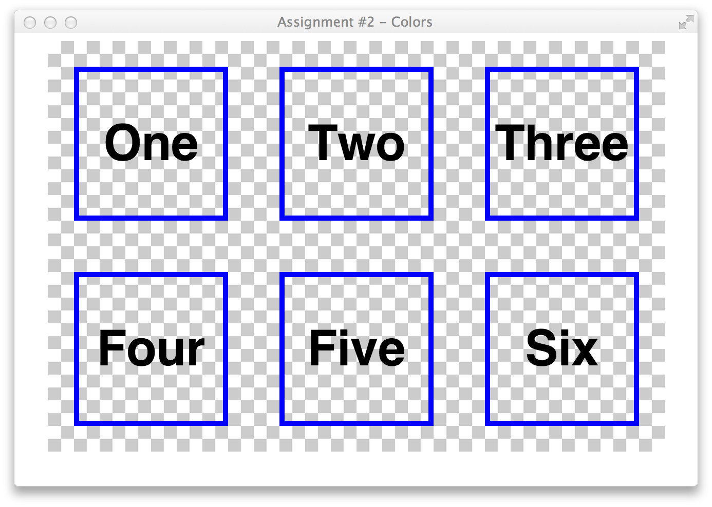
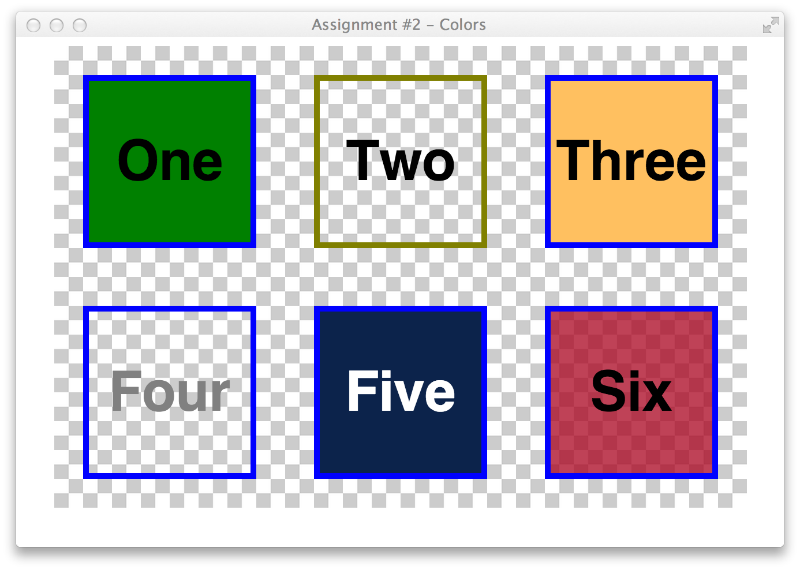
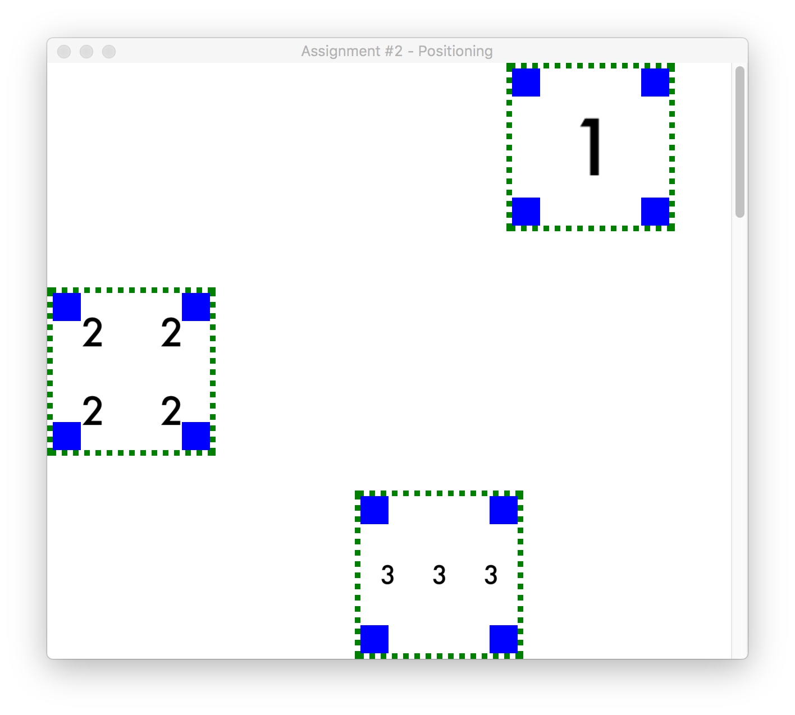

You have been given a basic design mockup as an image. The image is below. (Click on it for a larger version). You must create the HTML and CSS to create the design as a web page. There are a series of measurements to assist you:
The width of the main content container is 800px.
The red gradient header section is 800px wide.
The header uses header.png for a background.
The text for the header should be white, and a sans-serif font.
The text for the header should be closer to the bottom.
The red header area should touch the very top of the page.
The right sidebar is 200px wide.
The buttons in the sidebar are 200px wide.
The buttons in the sidebar should use button-background.gif for their backgrounds.
The buttons in the sidebar should have a 5px padding.
The spacing between the header and the sidebar buttons is 20px.
The spacing between the sidebar buttons is 10px.
There is a slight drop shadow on the text in the buttons. Use 1px 1px 2px black for the value of this property.
The main content area is 600px wide.
The space between the header and the content is 20px.
The thumbnail.png image is 150px wide and 150px tall.
The space between the thumbnail image and the text to the right and below is 20px.
The footer area is 800px wide.
The padding inset for the footer area is 20px.
The background color for the footer shall be #84d2e2.
Some additional rules for your HTML and CSS:
You may not use any <table> elements.
You do not have to use the exact text blocks from the mockup. Use a similar amount of filler text for the sidebar and main content area. The main content should still have three paragraphs.
You're not given any guidance or requirements on various font sizes. This is typical. Use your best judgment for measuring differences in font sizes from the mockup.
Modify the CSS within the <style> element problem2.html so that your end result matches the image below. There are additional specific instructions for modifications to each block within problem2.html.

Starting Image - Click for larger view

Ending Image - Click for larger view
Problem 3: Positioning - 30 points
Precisely positioning elements for a layout is very important. In this problem you will need to create a CSS file problem3.css which will contain rules to change problem3.html to look and perform like the following images and video. You may not modify the contents of problem3.html, only add CSS rules to problem3.css.
Each of the three main boxes is the same size, 150px tall and 150px wide.
Each of the three main boxes has 4 positioned blocks within it, one each in the four corners.
The smaller boxes in the corners of the main boxes should be blue, and be 25px wide and 25px tall.
The main boxes have a green border, which is dotted and 5px thick.
#block1 should be positioned in the upper-right corner of the page on page load, and should scroll with the page. It should touch the top, and be 50 pixels from the right edge of the window.
#block1 should have a background image of one.gif as shown.
#block2 should be positioned 200 pixels from the top of the page, along the left edge. It should not scroll with the page.
#block2 should have a background image of two.gif as shown.
#block3 should be positioned at the bottom of the window on page load, and should scroll with the page.
#block3 should be positioned 45% of the way from the left side of the window.
#block3 should have a background image of three.gif as shown.

Final Image - Click for larger viewVideo of final web page behavior.
Homework Submission
You should create a folder holding your files, and zip it up for submission. Name your folder and zip file something descriptive like Your-Name-HW3.zip or something. Please make a folder with your files in it, and zip up the folder. Do not select all the files and zip them up.
File List
problem1_assets/
problem1.css
problem1.html
problem2_assets/
problem2.html
problem3.css
problem3_assets/
Homeworks Zip files will be submitted to D2L, in the "Assignment 3" dropbox.
{kind=link}
{kind=link}
{kind=link}
{kind=link}